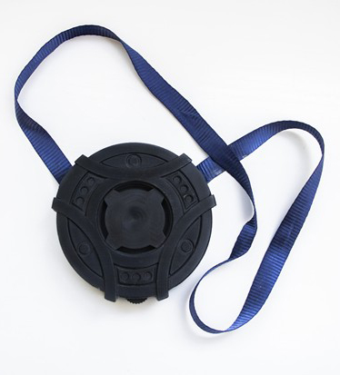
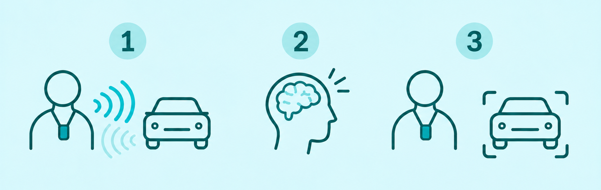
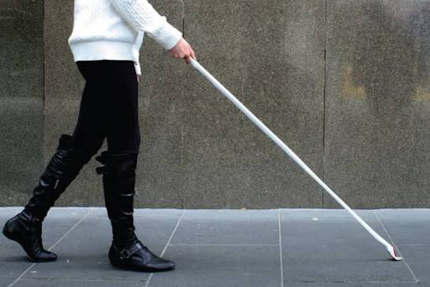
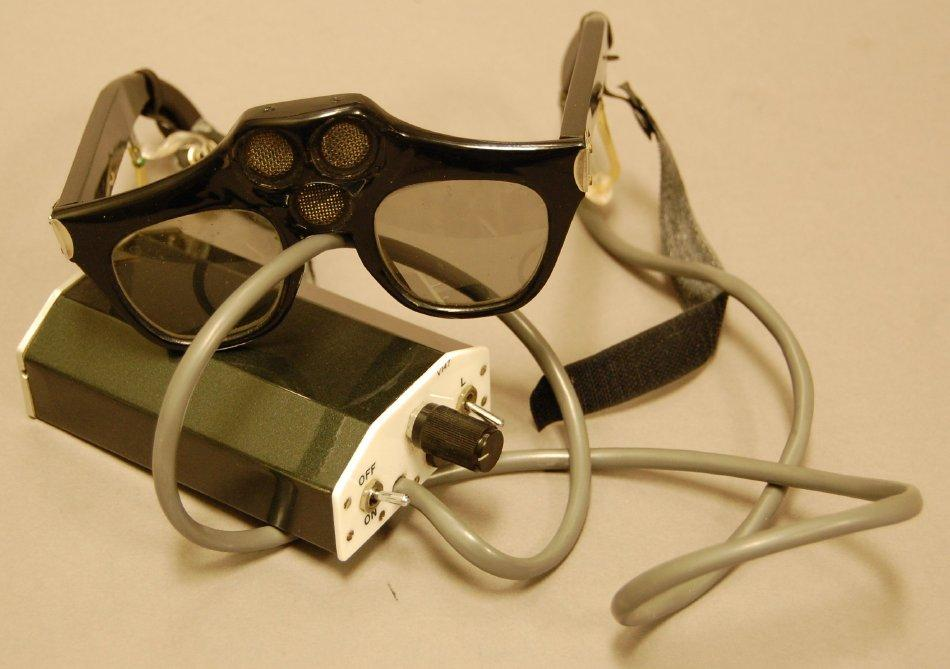
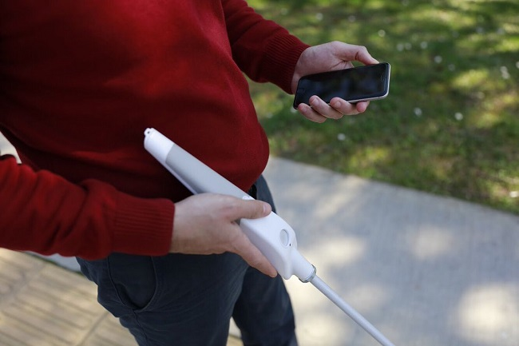
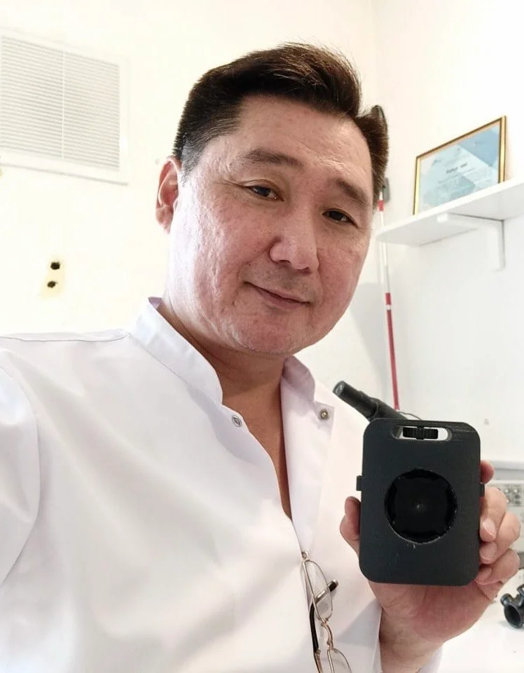

Funcionalidad
EL DISPOSITIVO
¿Como se utiliza?
El dispositivo tiene forma de medallón y está diseñado para llevarse alrededor del cuello. Puede detectar objetos a una distancia de hasta 15 metros mediante la emisión de clics de alta frecuencia, similares a los que utilizan los murciélagos para orientarse.

INTERACCIÓN PERSONA–DISPOSITIVO
¿Por qué utiliza el sonido?
Diversos estudios han demostrado que las personas ciegas pueden desarrollar una mayor capacidad para distinguir e interpretar sonidos. Por eso, SEZUAL aprovecha esta capacidad para ayudarles a orientarse en su entorno. La información llega al usuario a través del oído y, con la práctica, aprende a interpretar los ecos y reconocer los obstáculos que le rodean.

1. Emisión y reflexión
El dispositivo emite sonidos de alta frecuencia de forma intermitente, que posteriormente se reflejan en los objetos que se encuentran delante del usuario.
2. Interpretación
A continuación, el usuario recibe los ecos y su cerebro interpreta la información, lo que le permite hacerse una representación mental del espacio que tiene delante y estimar la distancia hasta los obstáculos.
3. Orientación espacial
Con suficiente práctica, el usuario puede llegar incluso a reconocer algunas características de los objetos, como el material del que están hechos. Toda esta información le ayuda a orientarse en el espacio y evitar obstáculos durante sus desplazamientos.
Evolución

Bastón blanco
Es el dispositivo más utilizado por las personas ciegas para
orientarse en el espacio.
Principal ventaja es la sencillez de uso. La información se
obtiene mediante el contacto físico y las vibraciones.
Actualmente, también se utiliza junto con los pavimentos
táctiles que facilitan la orientación.
Su principal
limitación es que permite detectar los obstáculos principalmente
mediante el contacto físico.

Sonic Torch
Uno de los dispositivos que pueden considerarse predecesores
tecnológicos de SEZUAL.
El aparato también emitía
ultrasonidos, pero, a diferencia de SEZUAL, recibía las señales
reflejadas y las transformaba en sonidos que el usuario podía
interpretar. De esta manera, ya era posible detectar objetos a
distancia.
Sus principales limitaciones eran la necesidad
de un aprendizaje prolongado, las limitaciones técnicas y el
hecho de ocupar una mano, lo que dificultaba el uso simultáneo
de otras herramientas de orientación.

Bastones inteligentes
Son una evolución lógica del bastón blanco tradicional. Estos
dispositivos pueden incorporar conexión con el móvil, navegación
GPS y sensores electrónicos que facilitan la orientación en el
espacio.
Sin embargo, siguen siendo bastones, aunque más avanzados, y
mantienen el contacto físico como una de sus principales formas
de obtener información del entorno.
Beneficios

Comodidad
En primer lugar, a diferencia de algunos dispositivos anteriores, SEZUAL deja las manos libres, ya que se lleva alrededor del cuello.
Una nueva forma de percibir el entorno
Lo más importante de SEZUAL es que permite al usuario aprender a interpretar por sí mismo la información que recibe. Con suficiente práctica, una persona puede llegar incluso a distinguir los materiales de los objetos que le rodean.
Detección de obstáculos a distancia
El usuario no necesita tocar los objetos con un bastón ni apuntar directamente hacia ellos con un dispositivo para detectarlos. Esto puede mejorar considerablemente su movilidad.